Gallery
Jay Adoni photos.
Photographs of Jacob Adoni, known as Jay Adoni, in New York.
Portraits
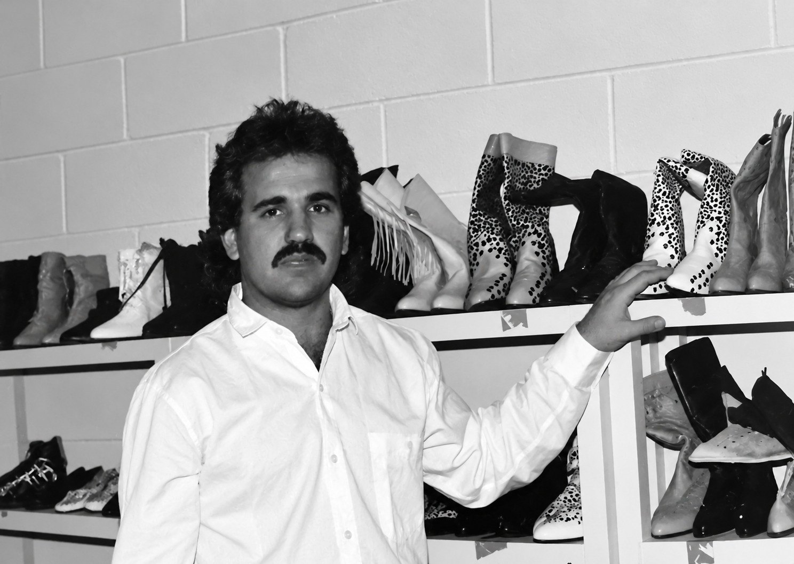
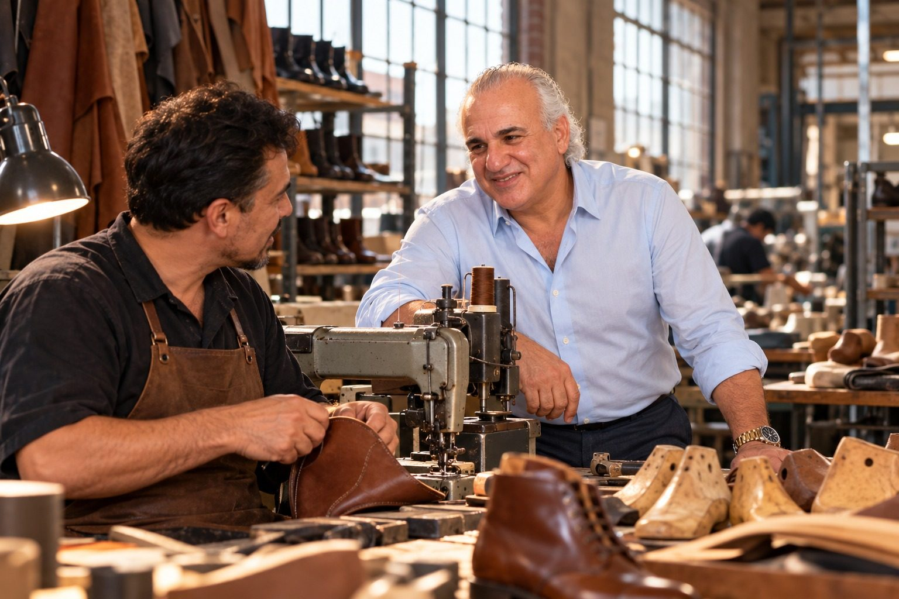
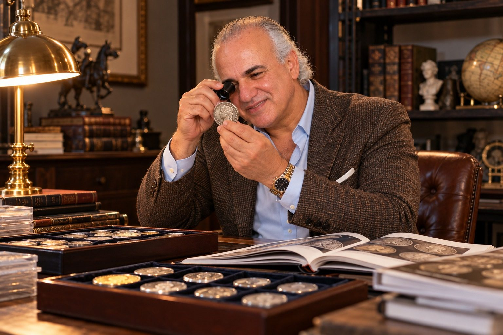
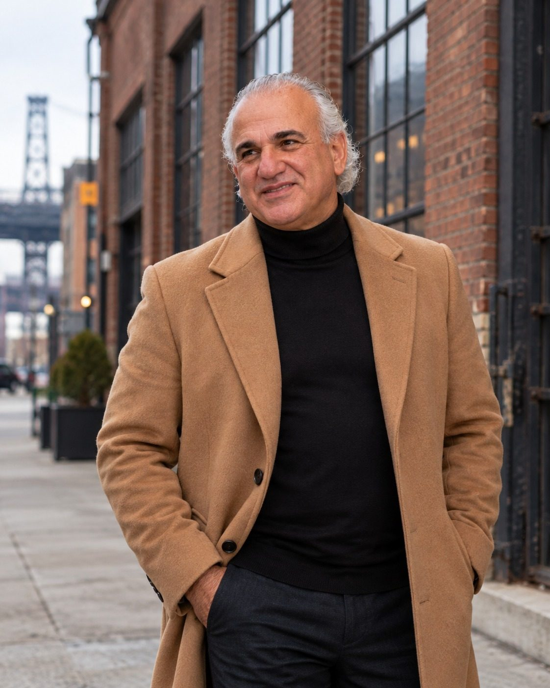
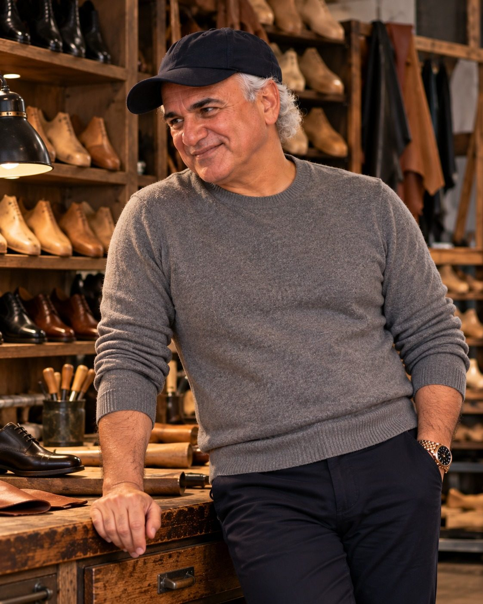
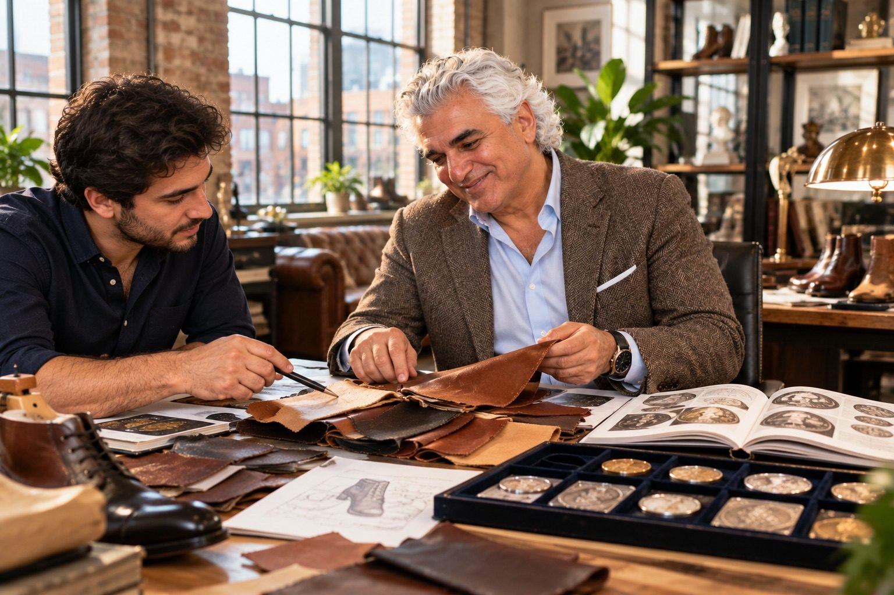

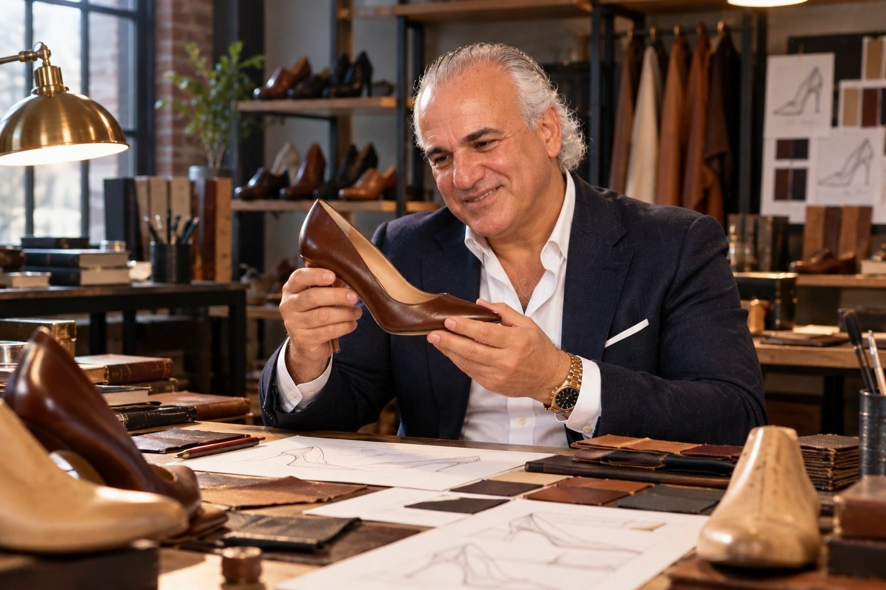


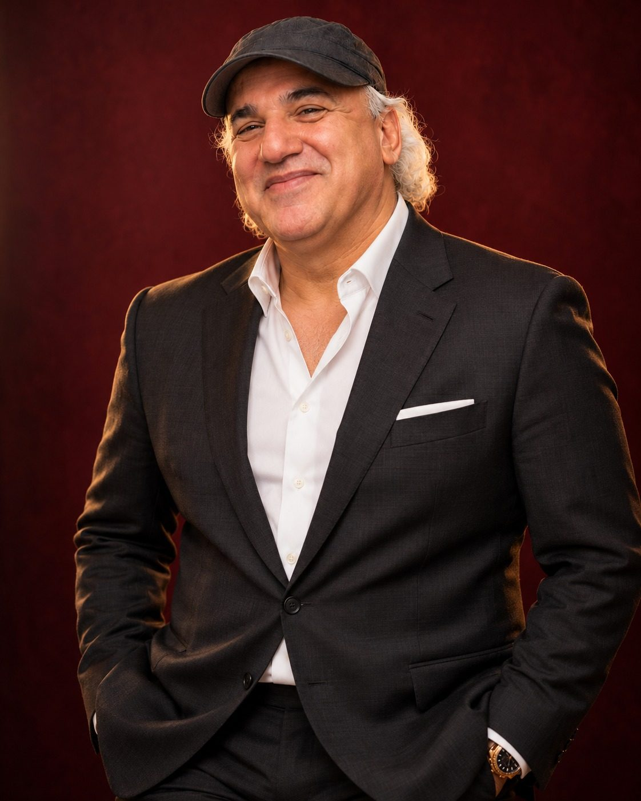
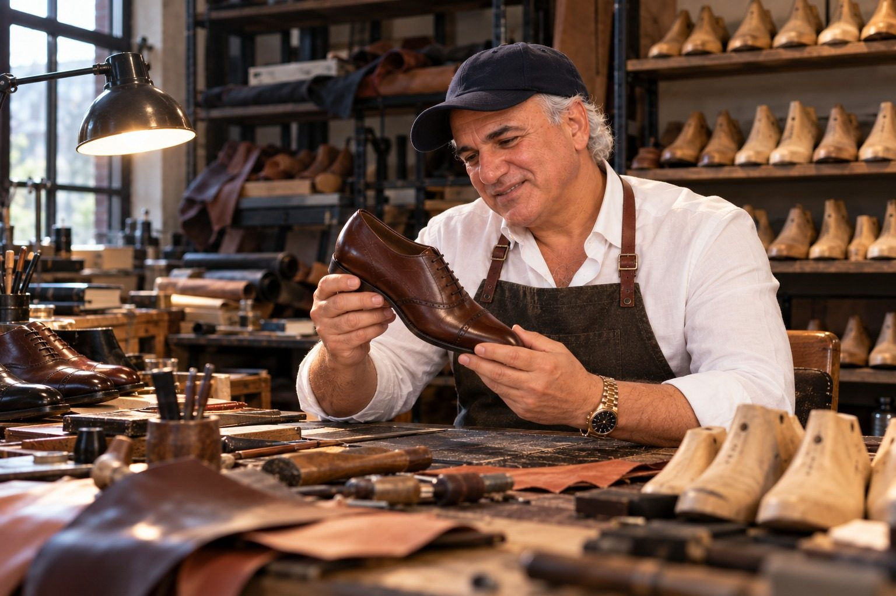
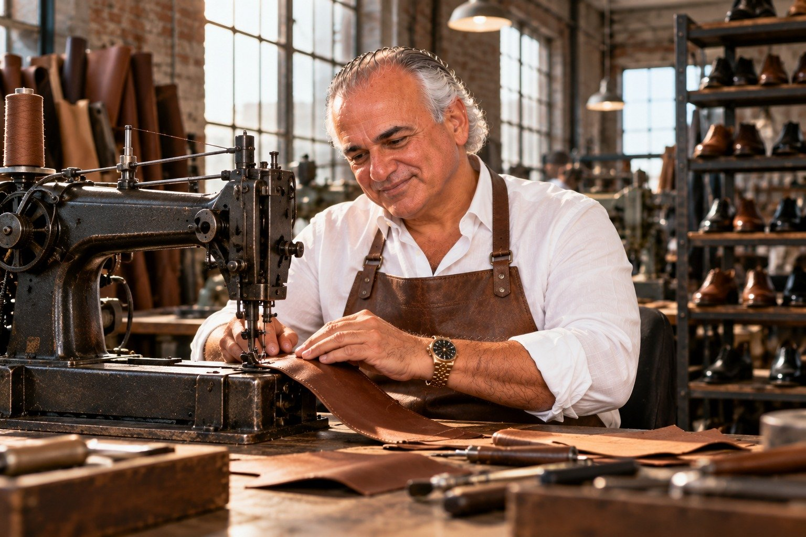
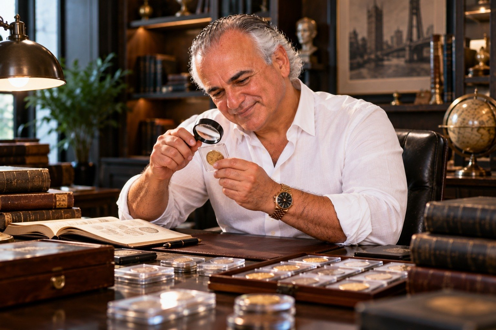
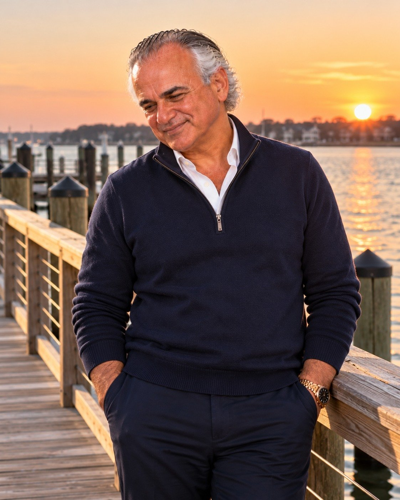
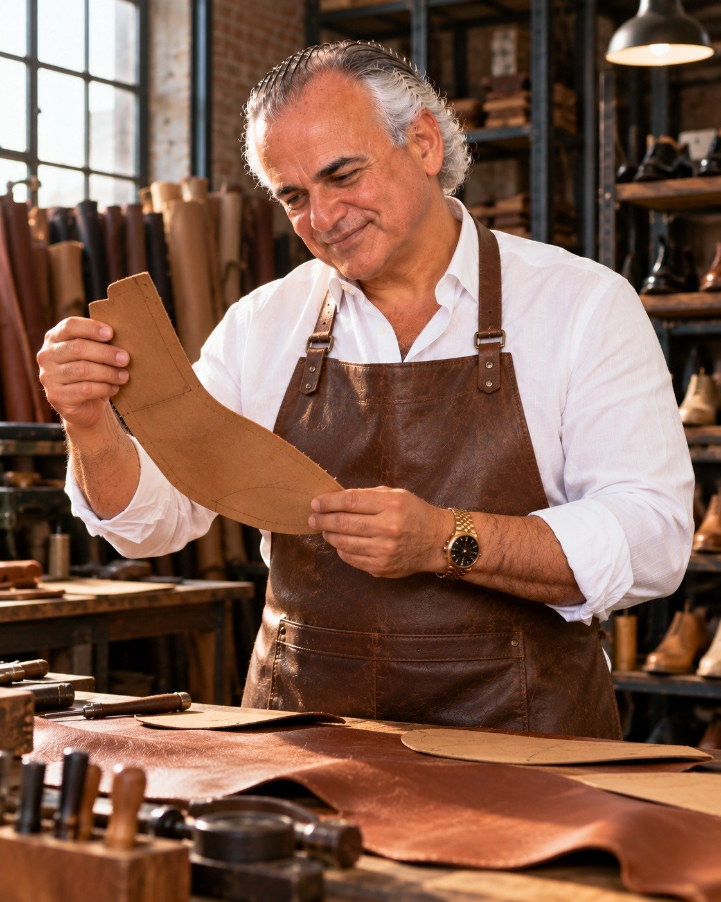
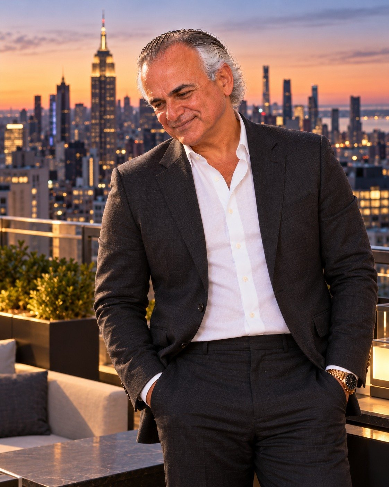
The 1980s photo is from The Dynamos. The other portraits were created with AI and approved by Jay Adoni.